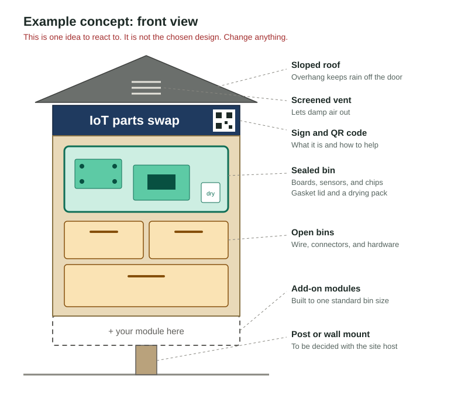

IoT Swapatron 5000
Meet Swapatron. It is a box. It eats spare electronics parts, and it gives them to whoever needs them next.
Take a part. Build something. Pass it on.
Nothing is decided yet
Swapatron has not hatched yet. Its shape, its rules, its name, and its dates are all open. We are collecting ideas until Sunday, January 10, 2027, and we want yours.
The idea

Think of a neighborhood book box, but for dev boards, sensors, wire, and connectors. The first Swapatron is planned for Fishers, Indiana, outside the Indiana IoT Lab. It is the HQ model and the primary test bed for the whole idea. The community would design it, build it, feed it, and look after it.
It is not only for Fishers. The plans are open, so any town can hatch its own.
You feed it the parts in your drawer. It passes them on to someone who will build with them. (Yes, "passes". We are not explaining further.)
Who it is for
New to electronics?
Swapatron shares. Take free parts, with a note on what each one is and what to build first. No experience needed.
Been building for years?
Swapatron is hungry. Feed it your spare parts, and start someone off with what you know.
Help shape it
You do not need to code. Every option works on a phone.
Join the founding team Have your say Draw your own design See every way to helpSwapatron's favorite humans
Nobody has fed Swapatron yet, so it is imagining who will. Each spot is replaced by a real person as soon as someone earns it.
- Waiting for: The Drawer Emptier
Has a drawer full of spare dev boards and a guilty conscience. - Waiting for: The Doodler
Draws a box on a napkin and changes everything. - Waiting for: The Skeptic
Says "this won't work because..." and is right, which is why it ends up working. - Waiting for: The First-Timer
Has never touched GitHub or a soldering iron, and shows up anyway. - Waiting for: The Keeper
Checks on Swapatron every week and expects no applause. Gets applause.
Think it won't work?
Good. Tell Swapatron to its face. Every "this won't work because..." is treated as a challenge to overcome, not a reason to quit. Swapatron can not fix what it only hears about secondhand.
Tell it why it won't workThe proposed timeline
| Now to Jan 10, 2027 | Listen. Collect ideas and sketches |
| Thu Dec 3, 2026 | Meet Swapatron. Drop in at the lab |
| Sat Dec 12, 2026 | Draw Swapatron. Sketch day for all ages |
| Thu Jan 7, 2027 | "This won't work because..." night |
| Wed Jan 13 | Founding team kickoff. The call for the team is open now |
| Jan 11 to Jan 31 | Decide, in the open. Decision night on Thu Jan 21 |
| Sat Feb 20 | Feed Swapatron. Parts drive |
| Sat Mar 20 | Build day, indoors at the lab |
| Sat Apr 24 | Hatching day. Swapatron opens, with food trucks, a celebration, and a technology petting zoo |
Every date is a proposal. None is confirmed with the lab yet, so please check before you travel. Events in detail and the full timeline.